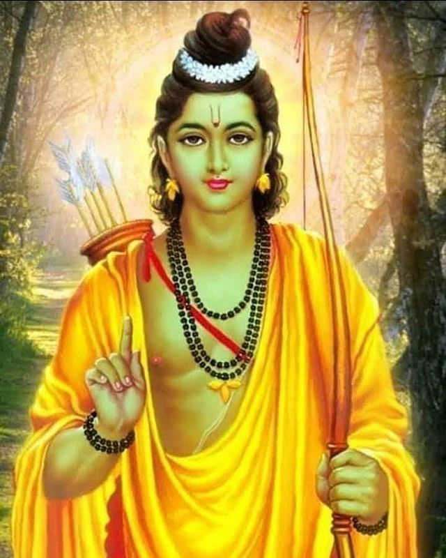

राम चंद्र
कृष्णा
नरसिंह
राम चंद्र

परिचय
श्रीराम का जन्म त्रेता युग में हुआ था। उनका जन्म दिवस चैत्र मास की नवमी तिथि को मनाया जाता है।
प्रभु श्रीराम का जन्म वर्तमान उत्तर प्रदेश के अयोध्या में हुआ था। वो अयोध्या के राजा दशरथ के सबसे बड़े पुत्र थे। राजा दशरथ की तीन रानियां थी – कौशल्या, कैकेयी और सबसे छोटी सुमित्रा। राजा दशरथ को पुत्रों की प्राप्ति बहुत ही जप-तप के बाद हुई थी। उनकी तीन रानियों से चार पुत्र रत्नों की प्राप्ति हुई। सबसे बड़ी रानी कौशल्या से राम, कैकेयी से भरत और सुमित्रा से लक्ष्मण और शत्रुघ्न।
बचपन से ही श्रीराम बहुत सहृदयी और विनयशील थे, और अपने पिता के सबसे करीब थे। या यूं कहे, वो राजा दशरथ की कमजोरी थे। राजा दशरथ एक पल भी उन्हें अपनी नजरों से दूर नहीं करना चाहते थे। सौतेली मां होने के बाद भी वो सबसे ज्यादा कैकेयी को स्नेह और सम्मान देते थे। उनके लिए उनकी तीनों माताएं एक समान थी। ज्येष्ठ होने के कारण वो अपने सभी छोटे भाईयों का बहुत अधिक ध्यान रखते थे।
श्रीराम की शिक्षा-दीक्षा गुरु वशिष्ठ के आश्रम में सम्पन्न हुई थी। प्रभु राम बचपन से ही बहुत पराक्रमी थे। बाल्यकाल से ही अपने पराक्रम का अनुक्रम शुरु कर दिया था। आगे चलकर उन्होंने अनेकों राक्षसों का वध किया और सबसे महत्वपूर्ण महा बलशाली लंकापति रावण को मारा और इस धरती को पावन किया।
एक बार महर्षि विश्वामित्र, जो भगवान राम और लक्ष्मण को अपने साथ लेकर मिथिला पधारे थे। राजा जनक अपनी बेटी, सीता के लिए एक स्वयंवर का आयोजन कर रहे थे। वह एक प्रतियोगिता थी, जहाँ अधिकांश संभावित दूल्हे राजकुमारी को जीतने के लिए अपनी ताकत लगा रहे थे। राजा जनक, जो उस समय मिथिला के राजा थे, भगवान शिव के सबसे बड़े भक्त होने के कारण उन्हें उपहार स्वरुप शिव-धनुष मिला था।
- स्वयंबर की शर्त महादेव के धनुष का खंडन
स्वयंबर की शर्त यही थी कि, जो भी विशाल धनुष उठाकर उस पर प्रत्यंचा चढ़ा पायेगा, केवल वही राजकुमारी सीता से विवाह कर सकता था, लेकिन यह कोई नहीं कर सका।
राजा जनक अत्यंत व्याकुल हो गये थे, कि क्या इस धरती पर कोई ऐसा शूरवीर नहीं है, जो महादेव के धनुष को अपनी जगह से हिला भी पाया हो। यहाँ तक की महा बलशाली लंका पति रावण जो महादेव का अनन्य भक्त था, उससे भी धनुष टस से मस नहीं हुआ।
- श्रीराम का जनक के दरबार में आगमन
इतने में प्रभु श्रीराम का जनक के दरबार में आगमन होता है, उनके तेज से पूरा माहौल प्रकाशित हो उठता है। गुरु का आशीष ग्रहण कर प्रभु क्षण मात्र में धनुष उठा लेते हैं। उनके स्पर्श मात्र से ही धनुष टूट जाता है। इस प्रकार स्वयंबर की शर्त श्रीराम पूरी करते है और माता जानकी उनका वरण करती है।
भगवान राम का सीता से विवाह होने के बाद उन्हें अयोध्या का राजा बनाना सुनिश्चित किया गया। उसकी सौतेली माँ उन्हें राजा न बनाकर अपने बेटे भरत को राजा बनाना चाहती थी । इसलिए उन्होंने, राजा दशरथ को राम को 14 साल के लिए वनवास भेजने के लिए कहा। चूंकि दशरथ अपने वचन से बँधे थे, उन्होंने दिल पर पत्थर रखकर यह सब किया। भगवान राम अपनी पत्नी और छोटे भाई लक्ष्मण के साथ वनवास के लिए जंगल चले गए।
- भगवान राम द्वारा रावण का वध
सुपनखा के नाक कटने से, यह प्रसंग शुरु होता है। अपनी बहन के अपमान से रावण इतना क्रोधित हो गया कि उसने सीता का अपहरण करके बदला लेने का फैसला किया। जिस तरह रावण सीता को दूर ले जा रहा था, भगवान राम के भक्त में से एक जटायु ने रावण से अपनी पूरी ताकत लगाकर युध्द किया। हालांकि रावण ने उसके पंख काट दिये और जटायु बुरी तरह घायल होकर जमीन पर गिर पड़ा। रावण, माता सीता को अपने साम्राज्य में ले गया, जिसे लंका कहा जाता है।
समुद्र पर राम सेतु का निर्माण
भगवान राम अपने वानर भक्तों और हनुमान के साथ लंका राज्य तक पहुंचने के लिए समुद्री मार्ग को चुना। राम भक्त हनुमान ने लंका द्वीप तक पहुंचने के लिए भगवान राम का नाम लिखकर तैरती चट्टानों का उपयोग करके समुद्र पर राम सेतु का निर्माण किया। वह रामसेतु पूल आज भी विद्यमान है।
रावण के 10 सिर (दशानन) थे, जिससे उसे मारना असंभव था। भगवान राम ने फिर भी उसे विभीषण (रावण का भाई) की मदद से हरा दिया और चौदह सालों बाद माता सीता और भाई लक्ष्मण के साथ अयोध्या लौटे, जो कि दिवाली के रूप में मनाई जाती है।